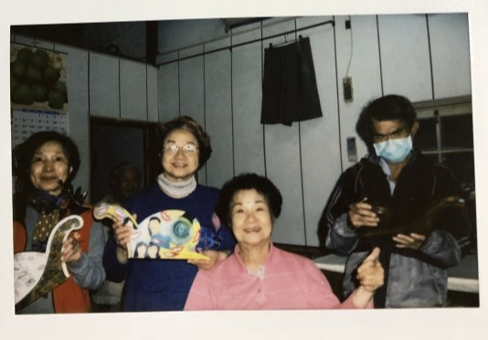

街區住民、老職人與他/她們的蝸牛裝置
託付蝸牛給他/她們時的交遞記錄


Feedback
劉彥均
LIU,YEN-CHUN
畢業於國立台南藝術大學造形藝術研究所。 習慣的創作方式，主要來自對於日常生活的觀察。由於感知的敏銳，擅長藉由經驗與記憶為本，透過連結、轉譯各種所閱讀及接收的資訊，解決自己對許多狀態及現象的提問，也因此在創作媒材上沒有固定的形式。從2015年起時常佇留當時還不是蝸牛巷的蝸牛巷，同時為「蝸牛巷讀本」的寫手之一。
Feedback
黃稚原
HUANG,ZHI-YUAN
根落老府城的艋舺郎，傳統寺廟彩繪藝師，兼人類學家。時時刻刻觀察著街仔頭、巷仔內的各種趣味代，最愛偷聽八卦，試著理解府城人頭殼內在想什麼。未來希望寫本跟信仰、傳藝、鬼怪流言有關的民族誌。
台北藝術大學美術系
台大人類學研究所博士班
現職 蓬萊齋藝術創作室
Feedback
陳怡妏
CHEN,YI-WEN
從2016年開始參與台南大宮町藝術浸潤計畫 《蝸牛巷慢慢走》社區營造-美術設計與執行隊員，2012年移居台南至目前成為蝸牛巷住民邁入第十年。 工作專業培育以美術，擅長敦親睦鄰並適度讓自己保持貧窮。擁有一台手工攤車 「綠豆皮」，執行“台南的粉角綠豆湯之味”任務，並且落實”勞動獲得自由”與創作合而為一的小生意。必要時沉迷於設計工作，是靈活有趣低效率的偏向。繪圖、手工、裝置、影片等製作尚可，但技能的通道隨時都在開拓，各項雖不能如大師專精，卻飽含技術上解決問題的熱忱與學習力。另外在意時間結構。培育於復興美工、高雄大學。